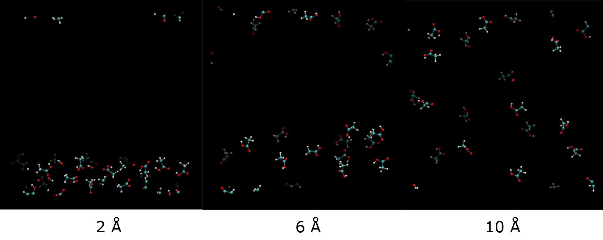

Solution Maker Feature¶
This page briefly describe how to use the Solution Maker feature, which is one of the option available in the DL_FIELD control file. In a more general sense, the feature is used to setup disordered systems such as liquids and solutions.
To use this feature, supply the input file that contains a ‘single-unit’ structure. The ‘single-unit’ can be a single molecule, an atom, or even a group of molecules. DL_FIELD will duplication this ‘single-unit’ structure according to the parameters specified in the Solution Maker options.
Note
Solution Maker feature only works when the cell vectors are also specified, either in the control file, or in the input configuration file (as cell parameters). The resulting simulation box MUST be either a cubic or orthorhombic.
DL_FIELD reads the following parameters in the Solution Maker feature:
switch concentration unit cutoff_distance
The switch activates the feature if it is 1. Otherwise, the value 0 will switch it off.
The concentration is a number which goes with the unit. Both pieces of information would be needed for DL_FIELD to duplicate a number of ‘single-unit’ structures in the system.
Finally, the cutoff_distance is the minimum distance in Angstrom that is permitted between any two structures during the duplication process.

Setup a liquid model
In DL_FIELD, a liquid is considered to be a system consists of purely a number of ‘single-unit’ structures. For example, to setup a pure ethanoic acid liquid system, the single-unit input structure would consists of a single ethanoic acid molecule. The following parameters:
1 1.05 g/cm^3 1.9
will instruct DL_FIELD to setup an ethanoic acid liquid system of density 1.05 g/cm 3. Each molecule must be separated by at least 1.9 Angstrom from one another.
Alternatively, DL_FIELD also recognises the density unit in kg/m 3.
Setup a solution model
A solution model is considered to consist of at least two components in the liquid state - the solute and solvent molecules. For example, to set up a 0.1 M concentration of ethnoic acid in water, the input file would only need to be a single ethanoic acid molecule. Set the following parameters:
1 1.0 mol/dm^3 4.0
Then, switch on the solvation feature (more details in the next page), and select one of the water models (TIP3P_O, say) as the solvent molecules.
DL_FIELD will automatically calculate the number of ethanoic acid require base on the concentration and simulation box size specified. Then, duplicate the number of ethanoic acid, with a distance of at least 4 angstroms apart from one another. After that, the resultant system will be populated with the solvent molecules.
Custom duplication
DL_FIELD also permits user to specify the exact number of ‘single-unit’ structures to be duplicated. For instance:
1 5 molecules 6.0
will instruct DL_FIELD to duplicate five ‘single-unit’ structures, each much be separated at least 6.0 angstrom from one another.
Users also have the option to solvate the system after duplication.
Cutoff values
The way how the single-unit structures distribute in a simulation box depends very much on the value of cutoff. In general, the larger the value the more random, and evenly distribute they would be. In any case, all duplicated structures will be orientated in some random orientation before they are placed in the simuation box.
Choosing a suitable cutoff value therefore is a matter of choice and trial and error. Basically, a liquid system would need a small cutoff value (typical value: 1.8 ~ 2.5 angstrom). For a dilute solution, typical value can vary a lot, but at least 5.0 angstrom or larger.
Sometimes the the structure duplication may fail. When this happens, try a smaller cut off value.
Note
After conversion using the Solution Maker feature, the system must always be equilibrated before doing the sampling.
Diagram below shows duplication of twenty ethanoic acid molecules in a box size of 40 x 40 x 40 Angstrom 3 using differnt cutoff values.
{kind=link}
All views are shown in the same orientation. Some molecular fragments appeared over the other side of edges are due to the periodic boundary effect. Molecules that are of darker shades means they are located further back from the front view. It can be seen that increasing cutoff values will make the systems more ‘randomise’ in space.